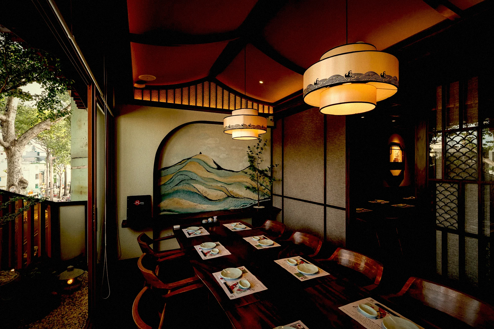
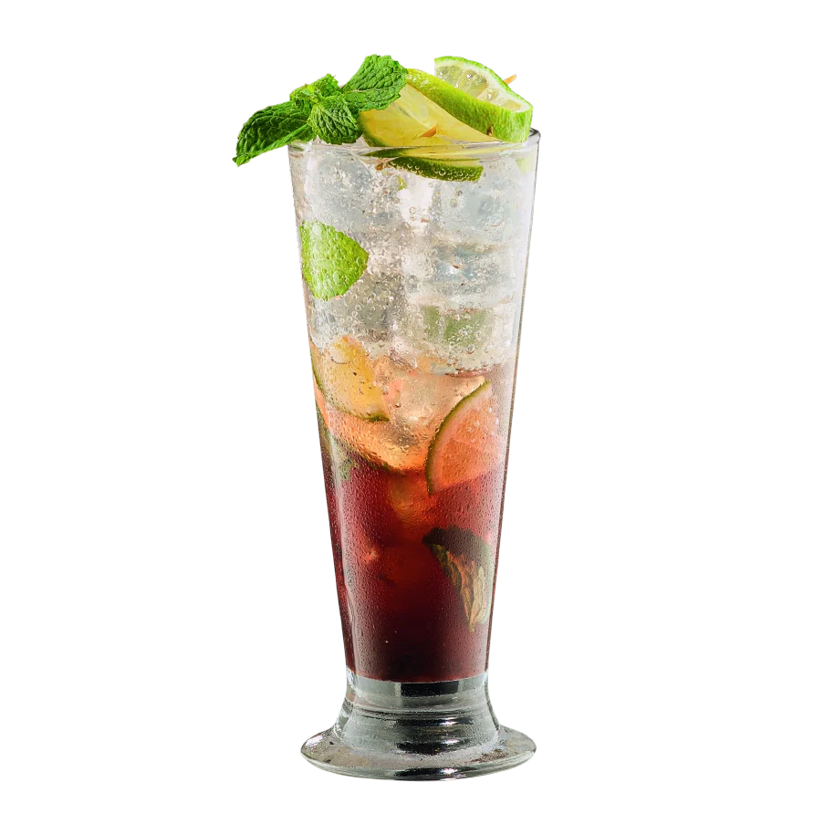
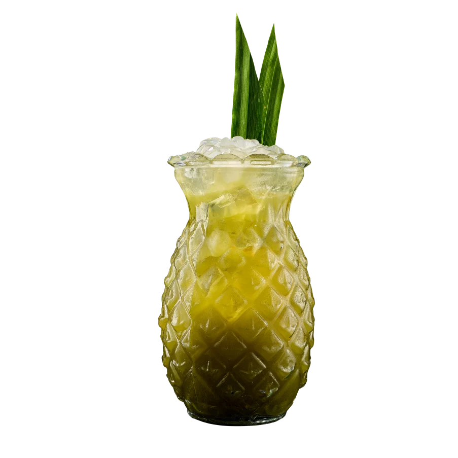
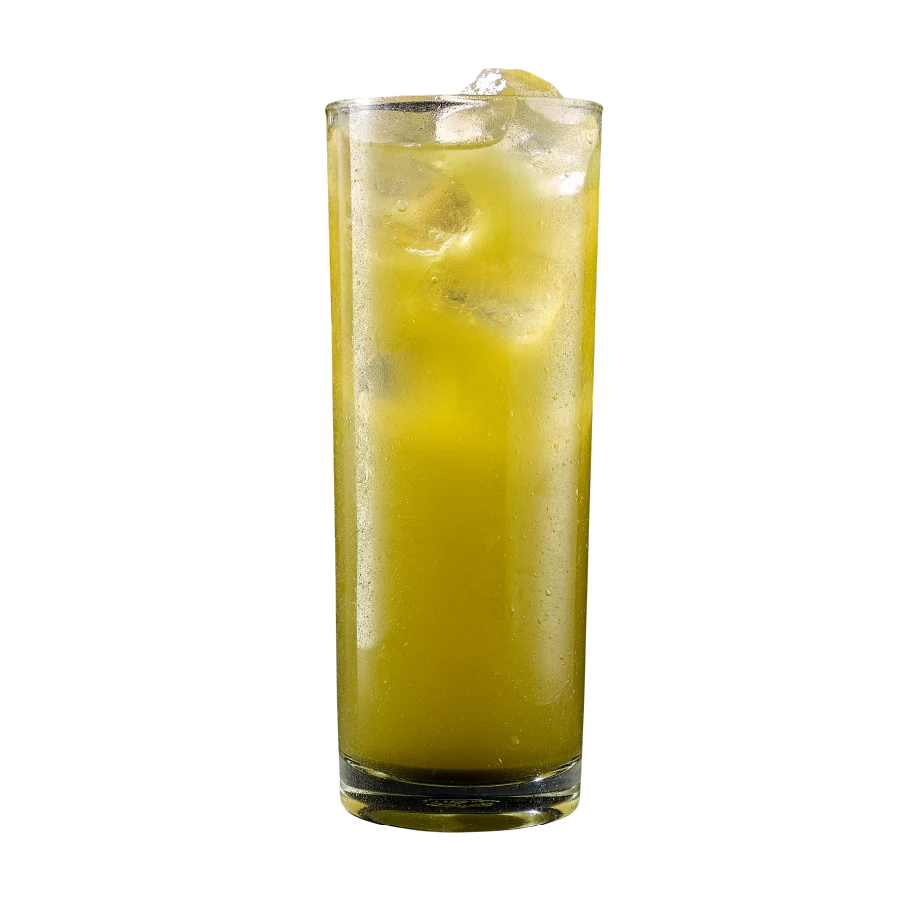
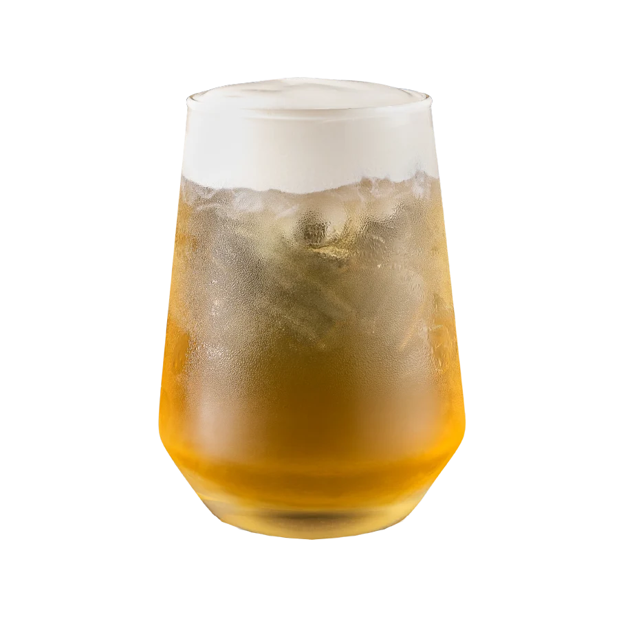
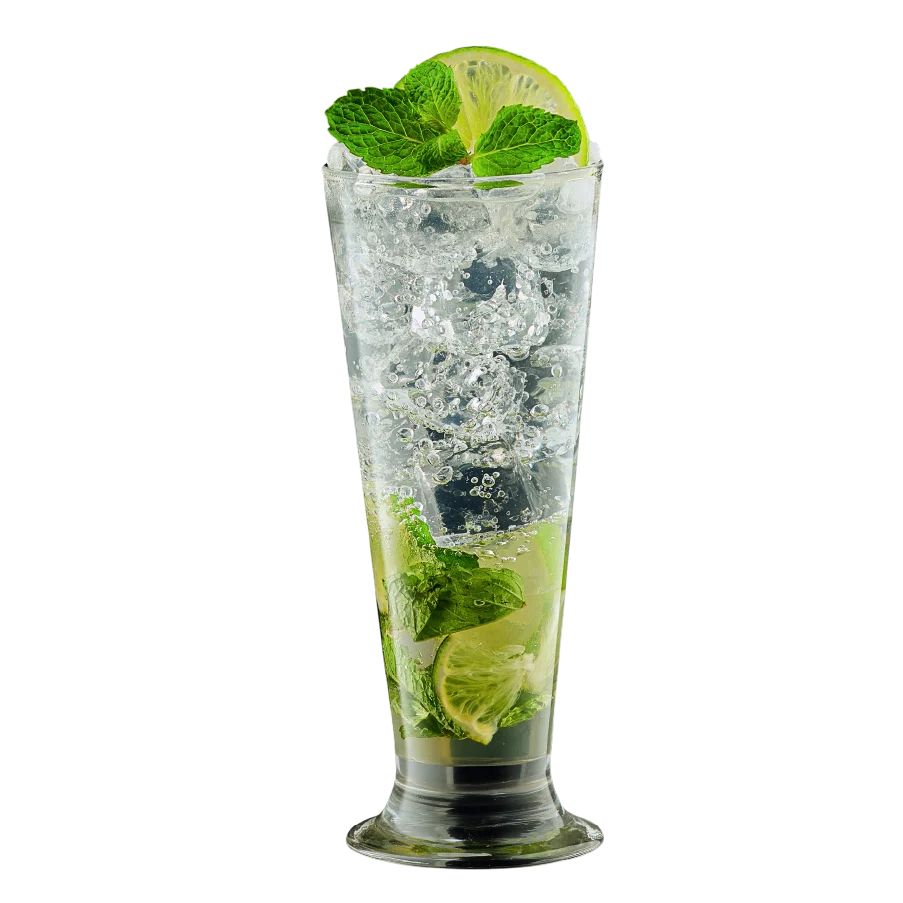
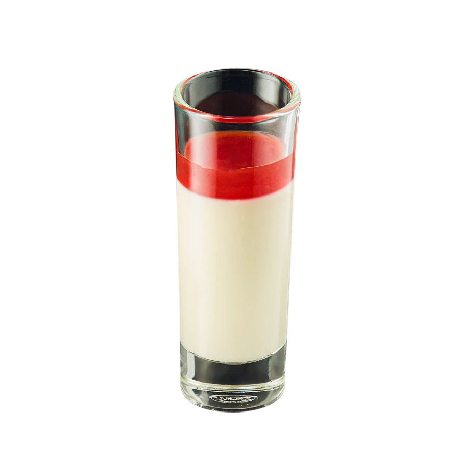
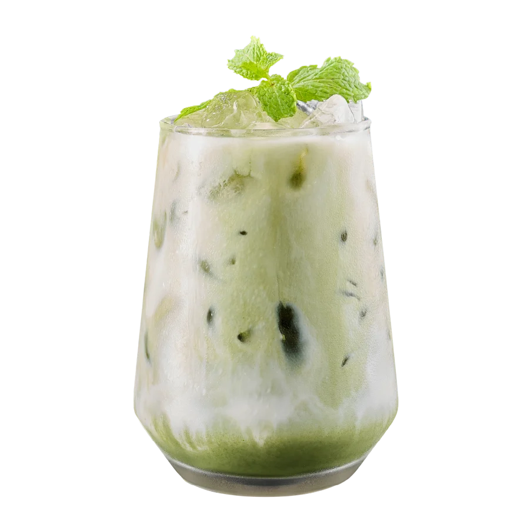
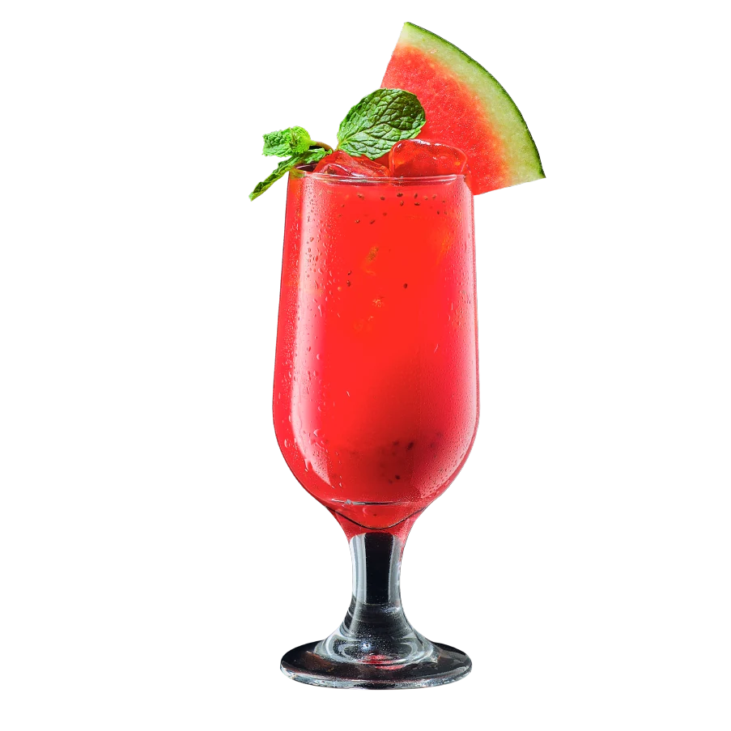

01
Sân vườn & hồ cá koi
01
Sân vườn & hồ cá koi
01
Sân vườn & hồ cá koi
Hồ koi, cầu đá và tiếng nước — một khoảng thở tĩnh giữa lòng phố.


Mùa xuân Nhật Bản nở rộ giữa lòng Sài Gòn
Trong tiếng Nhật, Haru nghĩa là Mùa Xuân — mùa của khởi đầu tươi mới, của trăm hoa đua nở, của nguồn thực phẩm dồi dào và tinh khôi nhất.
Haru Sushi ra đời để trở thành một “Mùa Xuân” trong lòng thực khách — nơi khởi đầu cho những cuộc gặp gỡ và trải nghiệm ẩm thực trọn vẹn.
Khám phá thực đơn →
Kiến trúc Nhật Bản truyền thống — cửa nguyệt, sân thiền, hồ cá koi — riêng tư và ấm cúng cho mọi buổi gặp gỡ.
Hải sản nhập mới mỗi ngày từ Việt Nam, Nhật Bản & Na Uy — tinh khiết, đúng mùa, trọn vị.
Đội ngũ chuyên nghiệp, chu đáo trong từng chi tiết — omotenashi đúng tinh thần hiếu khách Nhật.
Cửa nguyệt, sân thiền, hồ cá koi và những bức bích họa núi Phú Sĩ — trải nghiệm đích thực trên toàn hệ thống chi nhánh tại Sài Gòn.
01
Sân vườn & hồ cá koi
Hồ koi, cầu đá và tiếng nước — một khoảng thở tĩnh giữa lòng phố.
 02
Mặt tiền chi nhánh
02
Mặt tiền chi nhánh
Kiến trúc mái dốc, ánh đèn ấm dẫn lối vào không gian Haru.
 03
Phòng cửa nguyệt
03
Phòng cửa nguyệt
Ô cửa tròn kiểu Nhật, riêng tư và ấm cúng cho buổi gặp thân mật.
 04
Hiên trà đèn lồng
04
Hiên trà đèn lồng
Đèn lồng thắp về đêm, ấm cúng như một góc phố nhỏ Kyoto.
 05
Sảnh & bonsai
05
Sảnh & bonsai
Cầu thang gỗ, bonsai xanh — nghi thức đón khách theo tinh thần Nhật.
 06
Phòng riêng ấm cúng
06
Phòng riêng ấm cúng
Tranh cá ngừ, ánh sáng dịu — dành cho những bữa tiệc riêng tư.







